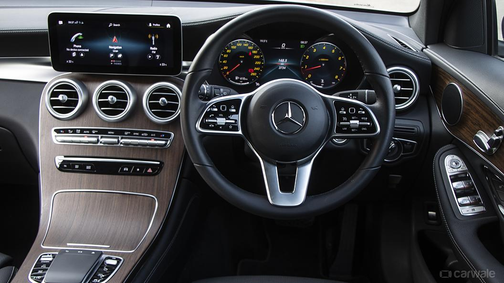
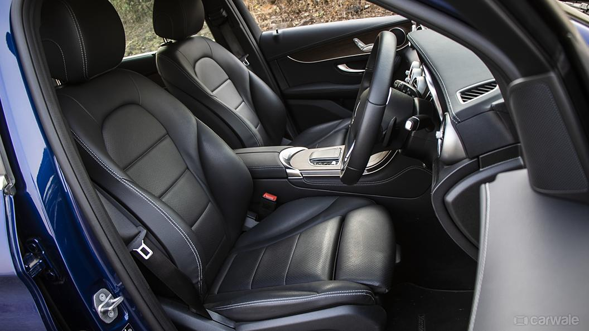
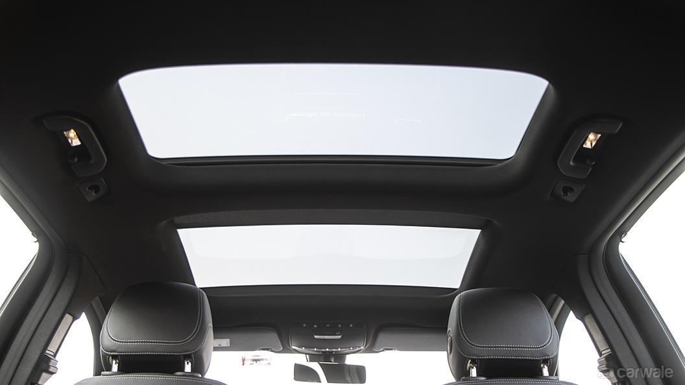

1 / 5

2 / 5

3 / 5

4/ 5

5/ 5

Exterior:
-->The Mercedes-Benz GLC features redesigned bumper, new headlamps and a revised grille. Moreover, the new GLC features redesigned LED tail lights and new alloy wheels for freshness.
Interior:
-->The GLC gets a 10.25-inch touchscreen infotainment system with the German automaker’s new MBUX system, 64 shade ambient cabin, lighting system, wireless charging, seven-airbags and a voice command system. Also on offer is a fully digital instrument cluster.
Engine:
-->The Mercedes-Benz GLC gets a BS6-compliant 2.0-litre diesel engine. This engine, which produces 168bhp and 400Nm of torque, is paired to a nine-speed automatic gearbox with Mercedes’ 4MATIC AWD system as standard. The model is also available with a BS6 compliant 2.0-litre petrol engine that produces 197bhp and 320Nm of torque.
Mileage: 21.35kmpl
Seating capacity: 7
Ex-showroom price: Starts from Rs.60.97 lakhs